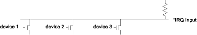
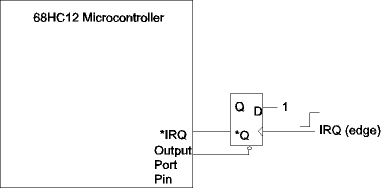
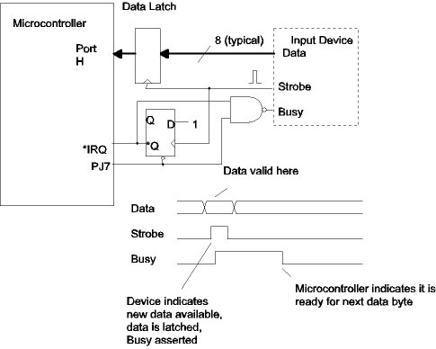

| Previous Section | Next Section | Index | Questions | Search the Text |
Interrupts can be requested from either internal or external devices. This section covers the provisions for external interrupts. The IRQ interrupt is a general purpose interrupt feature typical of that found on every microcontroller. The XIRQ interrupt is a high priority, non-maskable interrupt intended when fast response is critical. This is similar to the NMI (non-maskable interrupt) found in most microcontrollers. The Key Wakeups are lower priority interrupts with multiple pins capable of generating a single interrupt request.
The IRQ interrupt is requested via the *IRQ pin. The IRQEN bit (bit 6) of the IRQCR register must be set to 1, the default, to enable the *IRQ pin. The IRQE bit (bit 7) of the IRQCR register configures the *IRQ pin to be either falling edge (1) or level sensitive (0). By default the pin is level sensitive, however the application program can configure the pin to be edge sensitive. The IRQE bit can only be written to one time after reset. This prevents the settings from accidentally changing.
When there is only a single device which will assert the IRQ interrupt, it is easiest to configure the *IRQ pin for edge sensitive operation. Remember that the interrupt service routine must remove the condition that is causing the interrupt request to be invoked. In the case of edge sensitive input mode, the resetting is accomplished automatically by servicing the IRQ.
The level sensitive input mode allows multiple sources to assert the IRQ interrupt with open collector drivers, relying on the internal pull-up resistor internal to the *IRQ pin. As shown in the figure below, any of devices 1, 2, or 3 can assert the IRQ interrupt by turning on the respective driver. When level sensitive input is used, the condition causing the interrupt request must be removed, otherwise the interrupt routine will be re-entered when the I condition code bit is cleared. If multiple devices are requesting an interrupt, they all can be serviced in one invocation of the interrupt service routine, or the interrupt routine will be re-entered to handle the additional requests. Note that if the IRQ input were edge sensitive, only one interrupt request would be seen (because only one edge would be generated), and the interrupt routine would have to take care to service all devices requesting the interrupt in the single invocation.

For microcontrollers which do not have edge sensitive interrupt request inputs, a type D flip-flop with asynchronous reset can be used to make the level sensitive input edge sensitive.

The IRQ edge sets the latch, asserting the IRQ input. The interrupt service routine must then clear the interrupt request by pulsing (negative) the output port pin to reset the latch. Let's revisit the problem of the parallel input port with handshaking. The cross-connected NOR gates have been replaced with a flip-flop which drives both the busy input to the input device and the *IRQ pin. The NAND gate insures that Busy will be asserted during the asynchronous reset of the flip-flop. Port H is being used for an input port while pin 7 on Port J is being used as an output pin to reset the flip-flop.

The interrupt service routine could be the following:
irqint:
ldaa PTIH ; Get the input data
bclr PTJ #$80 ; pulse PJ7
bset PTJ #$80
nop
cli ; safe to re-enable interrupts
Process the input data in accumulator A
rti
The XIRQ interrupt request pin replaces what in many microcomputers is called the "non-maskable interrupt request." The problem with a true non-maskable interrupt request is that if it is being asserted when the system is powered on, the request will be handled before the microcontroller has initialized the system. The XIRQ request, on the other hand, is maskable once. The X bit in the condition code register is used to mask XIRQ. It is initialized to 1. The program can clear the bit, but once it is cleared it can only be set by an XIRQ being serviced.
To clear the X bit, execute the instruction:
andcc #~$40
When an XIRQ is serviced, both the X and I bits in the condition code register are set. This masks off both maskable and XIRQ interrupts. However servicing a maskable interrupt does not set the X bit, allowing an XIRQ to occur. XIRQ is considered to be at a higher priority level than IRQ in that an XIRQ request will always interrupt the execution of an IRQ service routine while an IRQ request will not interrupt the execution of an XIRQ service routine unless specifically enabled by executing the cli instruction.
The XIRQ interrupt is asserted via the *XIRQ pin. The input is level sensitive and is active low. As with the level sensitive *IRQ interrupt, the input must go back to the high state before the interrupt service routine can return.
In the Dragon12-Plus board and most other evaluation boards, the *XIRQ pin is connected to the Program Abort switch and causes execution to return to D-Bug12.
The following example program is an extension of the previous Real Time Interrupt program described in Writing Interrupt Service Routines. This time there are three separate interrupt service routines, one for the RTI interrupt, one for the IRQ interrupt, and one for the XIRQ interrupt. Separate variables hold the counts of each interrupt. In addition, resetting the microcontroller will reset the counts to zero. The full program can be viewed here or executed in the simulator here. Three interrupt vectors as well as the reset vector are set in the vector table:
org $FFF0
dw rtiisr
org $FFF2
dw irqisr
org $FFF4
dw xirqisr
org $FFFE
dw start
The program initialization resets the counters, configures the real time interrupt, clears the X and I bits in the CCR, then goes into a loop waiting for interrupts:
start: lds #DATAEND
movw #0 ticks ; reset all counters
movw #0 irqs
movw #0 xirqs
movb #$23 RTICTL ; M=2, N=3, 1 KHz rate (roughly)
bset CRGINT #$80 ; RTIE = 1
andcc #~$50 ; Clear X and I bits in CCR
loop: wai ; Everything happens in
bra loop ; an ISR
The two new interrupt service routines will work fine in the simulator, but in the "real" microcontroller, some action would need to be taken to remove the interrupt request.
irqisr: ; IRQ in the simulator resets automatically!
ldd irqs
addd #1
std irqs
rti
xirqisr: ; XIRQ in the simulator resets automatically!
ldd xirqs
addd #1
std xirqs
rti
end
Ports H, J and P, discussed earlier under General Purpose I/O Pins, have an additional feature in that they can be configured so that a rising or falling signal edge on any pin can cause an interrupt request. Pins on port J causes an interrupt request using the vector at $FFCE, while port H uses the vector at $FFCC. Port P has the lowest priority vector at $FF8E. The interrupt service routine must check the status register bits to determine which pin is causing the interrupt request. Note that since these pins are edge sensitive, they are not suitable for the wired-OR operation described for level sensitive interrupts at the start of this section, and typically pull-up resistors would not be used.
All three ports are configured the same way; we will use Port H as the example. We have previously seen that port H has a data register, named PTH, and a control register DDRH to set the direction of each pin. In addition there is a control register, PIEH which contains interrupt enable bits for each pin of port H, and a status register, PIFH which contains the interrupt flags for each pin. The pull-up polarity register PPSH also selects the edge on each pin that will cause the interrupt flag to be set. A 1 bit means the rising edge will set the flag bit, while a 0 bit, the default, means the falling edge will set the flag bit.
The interrupt flag can be cleared by writing a one to the bit. It is not cleared by writing a zero. The flags should not be cleared using the bset instruction. The reason is that the bset instruction performs an OR operation on the location. Using bset will cause all the flags that are set to be reset, not just the selected flag. The correct procedure is to use bclr, with a mask that is 0 for each flag that is to be reset, and a 1 for those that are to be unchanged.
It is desired to count the number of 1->0 transitions on pin PH0 (using byte location $1000 to hold the count) and on PH4 (using byte location $1001). The following code configures Port H to generate an interrupt when the transition occurs:
movb #$11 PIEH ; Enable interrupts for port H pins 0 and 4
The interrupt vector at $FFCC is set to point to the following interrupt routine:
kwhint:
brclr PIFH #$1 not0 ; Branch if port H pin 0 didn't have falling
; edge
bclr PIFH #~$1 ; Clear the interrupt flag
inc $1000 ; increment the count
not0:
brclr PIFH #$10 not4 ; Branch if pin 4 didn't have falling edge
bclr PIFH #~$10 ; Clear the interrupt flag
inc $1001 ; Increment the count
not4:
rti
Note that the interrupt flag is only cleared if it was sensed to be 1. Let's consider the case where bit 4 flag is set followed shortly by the bit 0 flag. The bit 4 flag being set will cause the interrupt request, the first brclr will take the branch, and the second brclr will not be taken. Say that at this point the bit 0 flag is set. The bclr instruction will clear only the bit 4 flag, and only the count of bit 4 edges will be incremented. When the rti is executed, the interrupt request will still be asserted because the bit 0 flag is set, and the interrupt service routine will be immediately reentered. This time the first brclr will not be taken, and the bit 0 flag will be cleared, unasserting the interrupt request.
Reference: HCS12 Core Users Guide for IRQ and XIRQ operation, MC9S12DP256 Port Integration Module Block Users Guide for key interrupts, MC9S12DP256B Device Users Guide for interrupt vector table and pinouts.
Continue with The RTI and COP Interrupts.
Return to the Index.